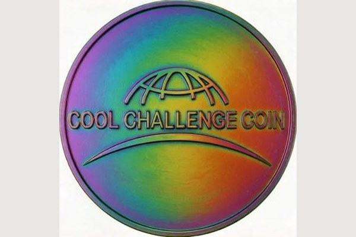
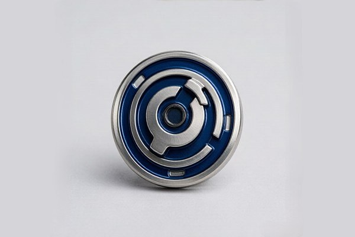

Beyond Standard Enamel: Why Special Effects Matter
In challenge coin culture, a coin is more than a medal — it is a tactile conversation piece carried in pockets, exchanged in handshakes, and displayed on executive desks. While classic soft enamel and mirror-polished hard enamel remain the workhorses of the industry, adding a purposeful special effect elevates a piece from ordinary unit memorabilia into a treasured collector item.
Special effects give a coin personality. A search-and-rescue or SWAT team coin with subtle glow enamel speaks directly to nocturnal operations. An anniversary coin with rich translucent blue resting over a radial sunburst pattern catches ambient light like a cut sapphire. And a functional bottle-opener cutout or spinning center core turns a decorative medallion into an interactive everyday-carry tool.
The secret to successful execution lies in restraint. The most memorable custom coins rarely combine every available gimmick. Instead, they select one or two signature effects that reinforce the underlying story of the organization.
Translucent Enamel: The Stained Glass Depth Effect
Unlike opaque enamel, which forms a solid, non-see-through color block, translucent enamel is tinted resin that permits light to pass through to the stamped metal below. As light travels through the tinted layer, bounces off the coin surface, and returns to the eye, it produces a luminous, jewelry-grade depth often compared to stained glass or fired vitreous ceramic.
To maximize the optical brilliance of translucent enamel, professional coin makers stamp intentional geometric textures into the recessed metal floor before the enamel is poured. The three most effective background textures include:
- Sandblasted Matte Texture: Creates a soft, satiny glow underneath the translucent color, providing a velvety matte look that prevents harsh glares.
- Sunburst or Radial Fluting: Fine raised metal lines radiating from the center like wheel spokes. As the coin tilts under lighting, the reflected rays shift dynamically beneath the colored enamel.
- Cross-Hatch and Guilloché Patterns: Interlocking diamond cuts that simulate the engine-turned guilloché dial work of luxury Swiss watches.
Translucent enamel performs best over bright, highly reflective platings like polished shiny gold and bright nickel silver. Antique finishes can also be used for a moodier, vintage stained-glass appearance.
Glow-in-the-Dark Enamel: Night Visibility and Luminescence
Glow-in-the-dark enamel integrates photoluminescent phosphors directly into the liquid enamel mixture. When exposed to ambient sunlight, overhead LED lamps, or a pocket UV flashlight for just thirty seconds, the phosphorescent crystals store photonic energy and discharge it as a bright, visible glow in twilight or complete darkness.
Luminescent enamel is an iconic favorite across specialized military units, nighttime aviation squadrons, police K9 handlers, and firefighter units. It is also wildly popular in EDC (everyday carry) and gaming community challenge coins.
When specifying glow enamel, keep these practical design considerations in mind:
- Color Glow Options: The standard and brightest glow is neon green, which delivers the highest visibility and longest decay time (holding visible luminescence for up to six hours). Aqua blue and sky blue glow pigments offer a cool, modern aesthetic. Vibrant orange, red, and purple glow pigments are also available, though their glow intensity is naturally softer than green.
- Daytime Appearance: In normal daylight, glow-in-the-dark enamel does not look neon; it appears as an attractive off-white, pastel cream, or pale mint tone. Plan your daytime artwork with this neutral tone in mind.
- Strategic Placement: Use glow enamel to accent key focal points — such as skull eyes, crosshairs, dial markers, mottos, or lightning bolts — rather than flooding the entire coin face. A high-contrast glow accent delivers maximum drama when lights go out.

Glitter Enamel: Subtle Sparkle and Festive Accents
Glitter enamel infuses ultra-fine metallic or holographic flecks into colored enamel wells. When cured, the flecks catch point-source light, sparkling like diamond dust.
While glitter might sound unconventional for a metal challenge coin, it is remarkably effective when deployed with artistic purpose. Common applications include:
- Celestial & Aquatic Elements: Simulating starry night skies, deep ocean waters, or splashing waves on naval and space force insignia.
- Anniversary & Milestone Celebrations: Adding subtle gold or silver glitter to anniversary ribbons, jubilees, and 50-year service awards.
- Sports, Gaming & Event Badges: Bringing energy and collectible excitement to esports tournament medals, marathon coins, and holiday gifts.
The golden rule with glitter enamel is restraint: never fill an entire coin face with glitter. Confine it to small, symbolic sections where a shimmering texture reinforces the visual theme.
Cutout Holes and Custom Silhouette Dies
Standard coins are solid circular discs. A cutout (also called an internal piercing or open-work die) uses a hardened secondary cutting die to punch completely through the metal, leaving deliberate negative space inside the artwork.
Cutouts transform a coin's silhouette into a sculptured architectural piece. Common uses include:
- Iconic Silhouettes: Punching through the trigger guard of a service firearm, the arch of a historic memorial, or the space between an eagle's wings.
- Functional Utilities: Cutting an internal latch shaped as a functional bottle opener coin or a lanyard attachment slot.
- Tactical Crosshairs: Piercing the four quadrants of a sniper scope reticle so you can literally look through the center of the coin.
Because cutouts remove solid metal, the coin must be engineered with adequate thickness (typically 3.5 mm to 4.5 mm) and sturdy structural webbing (at least 2.5 mm wide) to ensure the coin remains rigid and never bends under pocket pressure.
Interactive Mechanisms: Spinners and EDC Bearings
Challenge coins are naturally tactile objects that people enjoy handling during meetings or desk work. In recent years, precision engineering has introduced moving mechanical parts to coin design.
Spinner coins feature an outer rim anchored to a center disc via an internal miniature steel ball bearing. With a flick of the thumb, the inner artwork spins smoothly for minutes on end. Designers use this mechanism for decision-maker coins ("Yes / No", "Buy / Sell", "Beer / Water"), roulette-style game indicators, or hypnotic optical illusion spirals.

Other mechanical features include detachable center pieces held by neodymium magnets (as in our magnetic golf ball marker coins), folding hinges, and gear-driven EDC fidget cores.
Epoxy Dome Coating: Protective Gloss vs. Tactile Feel
An epoxy dome is a drop of clear liquid polyurethane resin applied over the finished coin and baked until cured. Surface tension pulls the resin into a crystal-clear, smooth, rounded dome across the entire coin face.
Understanding when to add an epoxy dome is crucial:
- Best on Soft Enamel and UV Printing: Because soft enamel has recessed wells and raised metal ridges, an epoxy dome levels the surface into a glass-smooth shield, protecting colored enamel from scratching, paint chipping, and dirt buildup. It is also mandatory over UV printed photographic graphics to safeguard delicate ink layers.
- Not Recommended for Hard Enamel: Because hard enamel is already hand-polished flush and glass-smooth, adding an epoxy dome is redundant and dulls the crisp jewel-like metal luster.
- Avoid on 3D Sculpted Coins: An epoxy dome will pool unevenly across the peaks and valleys of high-relief 3D coins, causing optical distortions and flattening the tactile experience.
Laser Engraving and Sequential Numbering
For limited editions, graduation classes, and elite membership rosters, individual personalization adds undeniable collector value. High-precision fiber laser engraving allows each coin in an order to carry a unique serial number (e.g., "001 / 250"), a recipient's name, call sign, or service date.
Laser engraving can be applied either before metal plating (for a tone-on-tone struck appearance) or after plating (vaporizing the outer metal coat to expose the darker contrasting base alloy underneath). Many organizations dedicate an engraved plate or curved ribbon on the coin's reverse specifically for personalization.
Summary Comparison: Challenge Coin Special Effects at a Glance
To help you compare the visual impact, ideal applications, and durability of each special effect, review the comprehensive guide below:
| Special Effect | Visual Impact | Ideal Applications | Durability | Cost Tier |
|---|---|---|---|---|
| Translucent Enamel | Stained-glass optical depth, reveals textured metal | Maritime themes, sky backgrounds, luxury awards | High; scratch-resistant under resin | Low (+$0.15–$0.25/pc) |
| Glow-in-the-Dark | Vibrant green or blue glow in low light | Night ops, police SWAT, fire rescue, gaming | Excellent; phosphors baked into enamel | Low (+$0.20–$0.30/pc) |
| Glitter Enamel | Sparkling diamond-dust shimmer under point light | Jubilees, sports championships, holiday tokens | High; flakes permanently suspended | Low (+$0.15–$0.25/pc) |
| Cutout Holes | Dramatic silhouette openings, negative space | Bottle openers, weapon sights, architectural arches | Structural; requires ≥3.5mm thickness | Moderate (extra piercing die) |
| Spinner Bearings | Smooth interactive spin, mechanical fidget action | Decision coins, EDC tokens, gaming roulette | High; sealed precision ball bearings | Higher (bearing hardware & assembly) |
| Epoxy Dome | High-gloss protective glass shield | Soft enamel pocket carry, UV printed coins | Protective; shields paint from scuffs | Minimal (+$0.10–$0.15/pc) |
| Laser Numbering | Crisp serialized personalization (e.g. 042/100) | Limited edition releases, member registries | Permanent; engraved into metal | Low (+$0.20–$0.35/pc) |
5 Common Mistakes When Designing Special Effect Coins
Before submitting your artwork for digital proofing, review these five frequent pitfalls:
- The "Christmas Tree" Trap: Combining glow enamel, glitter, translucent colors, cutouts, and dual plating on a single coin. Too many competing novelties overwhelm the eye. Stick to one or two complementary effects.
- Expecting White Daytime Color from Glow Enamel: Many designers expect glow enamel to look stark white by day and neon blue by night. In reality, phosphorescent powder has an off-white, light cream, or greenish daytime tint. Account for this in your color layout.
- Placing Translucent Enamel Over Flat Bare Metal: If translucent enamel is poured over an untextured flat surface, it can look washed out. Always specify sandblasting, cross-hatching, or sunburst fluting beneath translucent areas to give light something to bounce off.
- Weak Structural Webbing on Cutouts: Designing thin metal bridges (under 2 mm) next to large cutout holes can cause coins to warp during high-tonnage die stamping. Ensure ample metal border width around all openings.
- Applying Epoxy Domes over Intricate 3D Relief: Liquid epoxy will settle thickly in the low crevices and thinly over high peaks, distorting your 3D sculpture. Keep 3D coins un-domed for maximum tactile satisfaction.
How to Combine Special Effects Tastefully
The most breathtaking challenge coins in circulation pair one structural feature with one optical color effect. Proven combinations include:
- Translucent Enamel + Radial Sunburst: Pouring transparent cobalt blue over a radial sunburst background on the coin's outer rim, surrounding a high-relief 3D sculpted center crest.
- Matte Black Nickel + Subtle Glow Accents: A stealthy tactical coin plated in dark black nickel, where only the night vision goggles or target crosshairs glow luminous aqua in the dark.
- Cutout Silhouette + Rope Edge: An ornate rope edge framing an anchor emblem whose loops are physically cut through with precision piercing dies.
Ready to Design Your Custom Coins?
Get a free quote and digital proof in 12 hours. Our team will help you refine your design for the best possible result.
Get Free QuoteFrequently Asked Questions
How does glow-in-the-dark enamel work on challenge coins?
Glow-in-the-dark enamel incorporates photoluminescent phosphors into the enamel formula. When exposed to natural sunlight or artificial UV light for a few minutes, the pigments absorb energy and emit a bright glow (typically green, blue, or aqua) in darkness for several hours. In normal daylight, the enamel appears as a soft pastel or off-white shade.
What is translucent enamel and how should I use it?
Translucent enamel is semi-transparent colored resin that allows the metal underneath to show through. When paired with recessed textures like sandblasting, sunburst rays, or cross-hatching, it creates a luminous stained-glass effect with remarkable optical depth.
Can challenge coins have cutouts and internal holes?
Yes. Custom piercing dies can punch internal holes or openings directly through the metal body. Cutouts are frequently used to silhouette architectural arches, create functional keyrings or bottle openers, or emphasize intricate badge designs.
Do special effects add significant cost to a custom coin order?
Most color upgrades like glow-in-the-dark, translucent enamel, or glitter add only a nominal per-piece fee ($0.15–$0.30 each). Structural features like cutout dies or precision spinner bearings require custom secondary tooling, which adds a modest one-time mold fee but amortizes smoothly across standard order volumes.
Conclusion
Adding special effects to a custom challenge coin is the bridge between good design and unforgettable craftsmanship. Whether you choose the rich stained-glass beauty of translucent enamel, the tactical surprise of glow-in-the-dark luminescence, or the tactile appeal of a precision cutout, special effects reward closer inspection and turn your coin into a timeless keepsake.
Not sure which special effect best complements your emblem? Request a free quote and digital proof. Our design specialists will render your artwork with realistic translucent, glow, and cutout simulations within 12 hours, giving you total clarity before production begins.